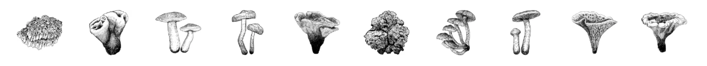
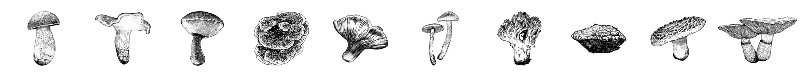

types of mushroom
| genus | spicies | type | common name |
|---|---|---|---|
| Gymnopilus | ventricosus | Gilled Mushroom | Western Jumbo Gym |
| Ramaria | All species | Coral Fungus | Coral |
| Cortinarius | neosanguineus | Gilled Mushroom | Western Blood Red Cort |
| Phaeolus | schweinitzii | Polypore | Dyer's Polypore |
| Turbinellus | floccosus | False Gill | Wooly Chanterelle |
| Echinodontium | tinctorium | Tooth Fungus | Paint Fungus |
